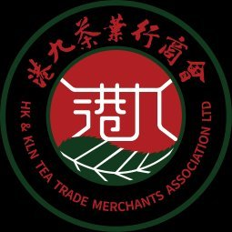

Hong Kong & Kowloon Tea Trade Merchants Association
1946 籌組 · 1948 正式成立
MEMBER SHOWCASE · 會員展示
茶葉進出口 · 批發 · 零售 — 連繫香港與北美市場
嶺南茶業公司為港九茶葉行商會會員商號，負責人林鎮浩先生現任本會副理事長，長年參與商會會務，為同業熟識的茶業貿易商。
公司業務以茶葉貿易為本，涵蓋出口、進口、批發及零售，主要市場包括香港及北美（據香港貿易發展局 Sourcing 登記資料）。2025 年 8 月，嶺南茶業隨本會參與第 16 屆香港國際茶展，於本會獨立展館中與多家會員企業一同推廣傳統茶工藝與港倉茶文化。
資料來源：香港貿易發展局 Sourcing 登記、商會官網會員名冊、香港新聞網 2025 年 8 月報道
業務分類據香港貿易發展局 Sourcing 公開登記；主營茶類及供應詳情請向商號查詢。